Токио · остров Миякэдзима · природа и еда
Миякэдзима: вулканический остров, куда из Токио летят на маленьком самолёте
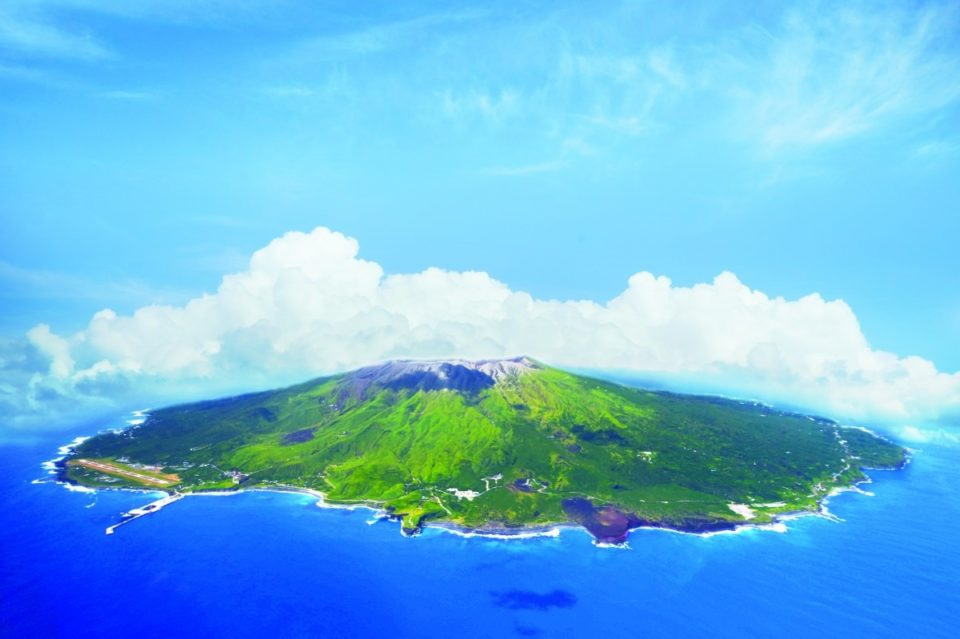
Миякэдзима лежит в Тихом океане примерно в 180 километрах к юго-юго-западу от Токио, но формально это тоже Токио. Действующий вулкан, редкие птицы, дельфины у соседнего острова и рыба в котелке с рисом: за всем этим сюда летят меньше часа.
Дорога
Полёт, похожий на аттракцион
Миякэдзима относится к островам Идзу и входит в столичный округ Токио. Остров овальный, в центре поднимается вулкан Ояма, и примерно раз в 20–60 лет в разных его частях случаются извержения. Считается, что остров возник больше 10 000 лет назад при подводном извержении. В эпоху Эдо сюда ссылали преступников, а весь остров входит в национальный парк Фудзи-Хаконэ-Идзу.
Попасть на Миякэдзиму можно только по воздуху или по морю. Самый быстрый путь начинается на аэродроме Тёфу на западе Токио: оттуда авиакомпания New Central Air летает на остров на Dornier 228, небольшом винтовом самолёте немецкой разработки длиной 16,56 метра. В 2019 году полёт занимал около 45 минут, в 2022 году около 50.
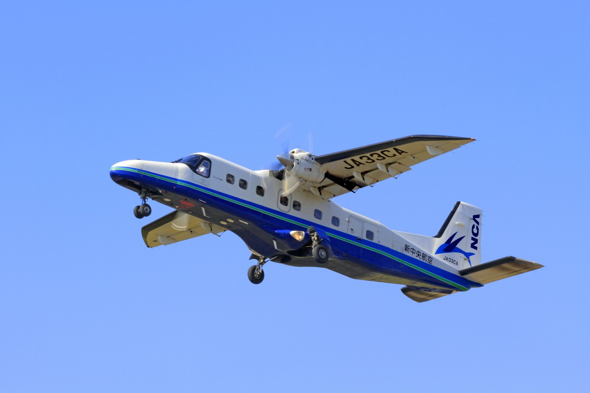
Почти каждое место в салоне у окна, а самолёт идёт на высоте 1000–2000 метров, гораздо ниже больших лайнеров. Сначала под крылом лежит Токио, похожий на макет, потом самолёт проходит рядом с огромными облаками, а внизу открывается синий Тихий океан.
Есть и другие пути. От причала Такэсиба в Токио на остров ходит большой ночной пароход, дорога занимает от 6 часов 30 минут. С острова Хатидзёдзима летает вертолёт через остров Микурадзима, от 40 минут (данные 2022 года).
Как добраться на Миякэдзиму
- Как добраться
- самолётом из аэропорта Тёфу авиакомпанией New Central Air около 50 минут; из Токио от причала Такэсиба большим ночным пароходом от 6 ч 30 мин; вертолётом с Хатидзёдзимы через Микурадзиму от 40 мин (данные 2022 года)
- Телефон
- +81 4994-5-1144 (туристическая ассоциация Миякэдзимы)
- Сайт
- miyakejima.gr.jp
Вулкан
Тропа по застывшей лаве
Из всех островов Идзу Миякэдзима самый беспокойный: вулкан здесь живой, и именно он создал главные виды острова. Подниматься к вершине вулкана Ояма нельзя: по местному постановлению вокруг неё закрытая и опасная зона.
Самое наглядное место на острове это тропа «Вулкан своими глазами» на западном побережье. В 1983 году на юго-западном склоне вулкана открылась трещина, и лава похоронила часть посёлка Ако: под ней остались около 400 домов. Благодаря учениям по эвакуации и спокойствию жителей при этом извержении никто не погиб. Поверх 19 гектаров застывшей лавы проложены деревянные мостки, и по ним можно пройти, чувствуя силу извержения под ногами.
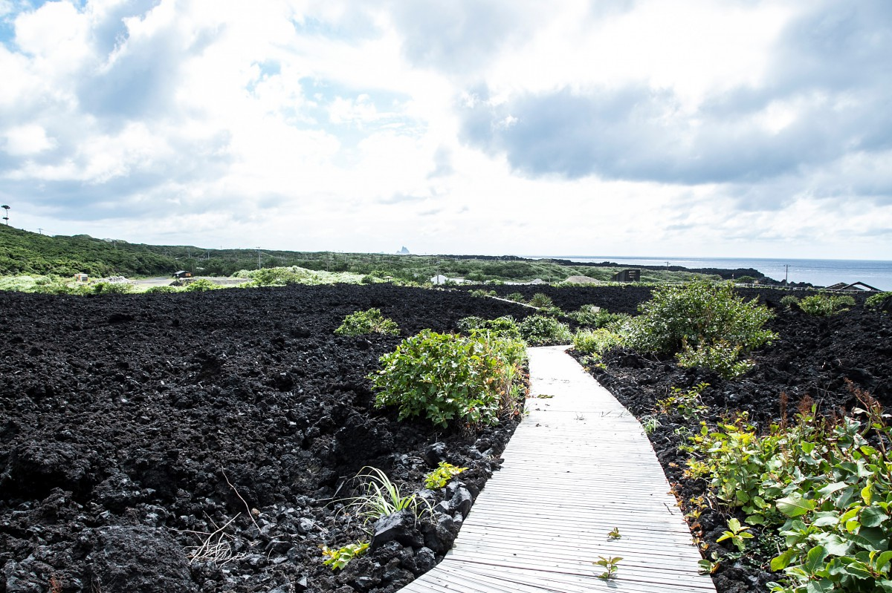
С мостков видно то, что можно встретить только здесь: синее море и лаву, местами ржаво-красную, местами чёрную.
Тропа «Вулкан своими глазами»
- Адрес
- столичный округ Токио, деревня Миякэ, Ако
- Телефон
- +81 4994-5-1144 (туристическая ассоциация Миякэдзимы)
- Часы работы
- 8:30–17:30
- Выходные
- без выходных
- Сайт
- miyakejima.gr.jp
Виды
Скалы, мысы и смотровая площадка
Вокруг вулкана Ояма разбросаны пейзажи, которые сделал вулкан. На побережье Имасаки стоит арка «Мэганэ-ива», «скала-очки»: её выточили волны в застывшем лавовом потоке. В проёме видны скалистые островки Самбондакэ, а ещё это известное место, откуда смотрят закат.
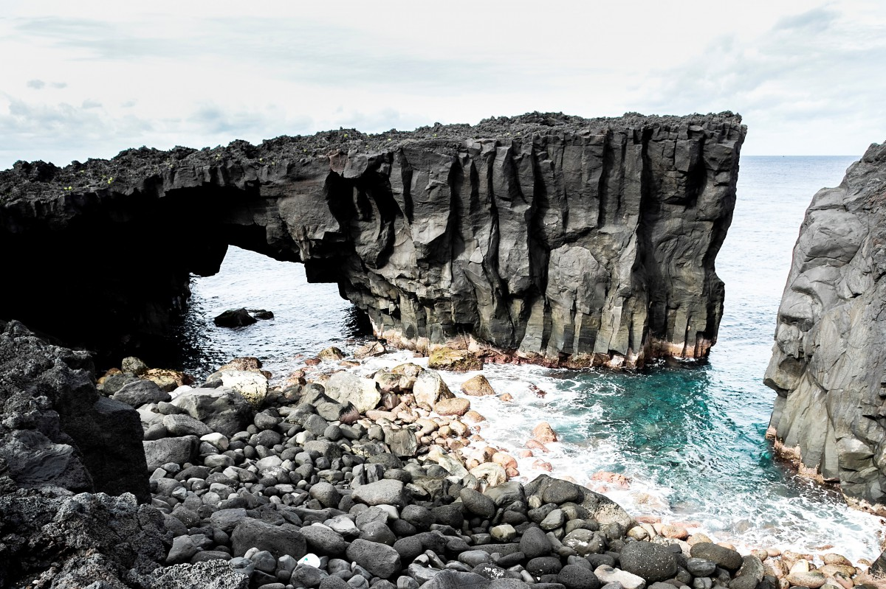
Ниппана-синдзан это шлаковый конус, который вырос за одну ночь. Позже его срезало со стороны моря, и разрез вулкана открыт целиком, как на учебной схеме. На северо-восточном берегу, на мысе Сатадо, маяк стоит на обрыве высотой 20 метров над водой, и перед ним до горизонта только океан.
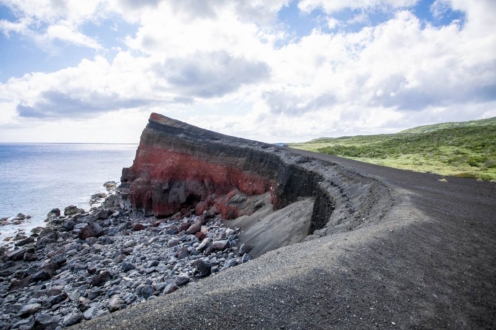
На склоне вулкана Ояма, на полпути к вершине, устроена смотровая площадка Ситито. В ясный день отсюда видны соседние острова архипелага Идзу.
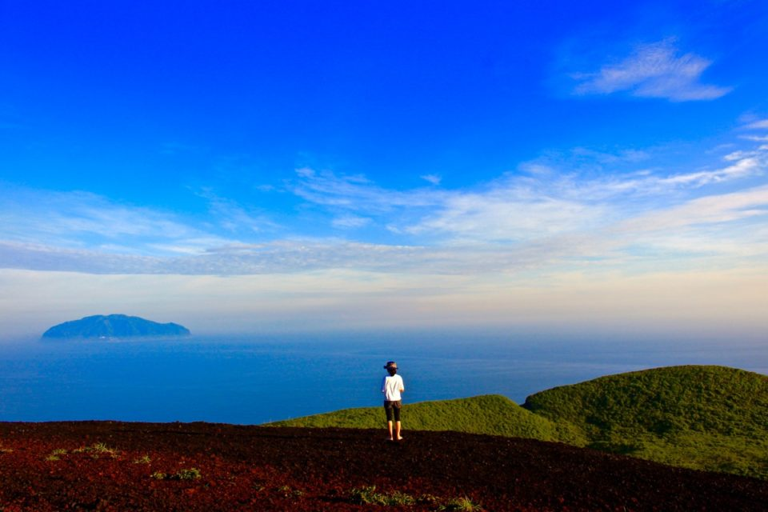
Лес
Озеро Тайро-икэ и дерево, где живёт бог
Около 2500 лет назад на месте нынешнего озера Тайро-икэ был кратер. Сегодня это самое большое пресное озеро островов Идзу, а вокруг него растёт вечнозелёный лес. В этом лесу стоит дерево «Майго-дзии», японский каштанник возрастом около 700 лет. По преданию, в нём живёт бог, который повелевает извержениями.
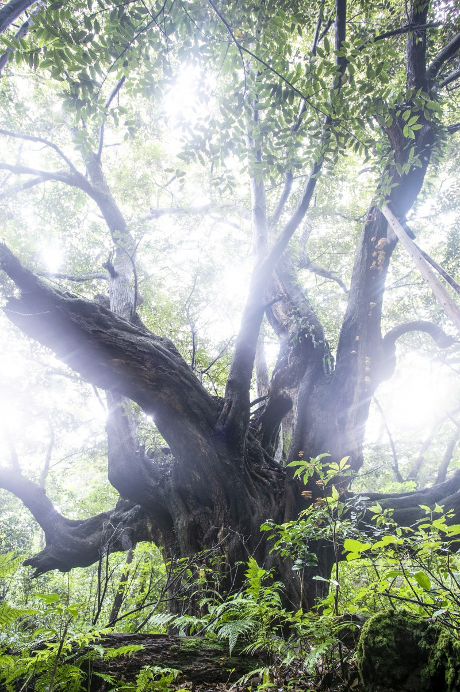
Тропу вокруг озера называют лучшей в Японии дорогой птичьего пения. Здесь живут редкие птицы: дрозд акакокко, охраняемый как природный памятник, и исчезающие виды, сверчок Плеске и пеночка Иидзимы. Природу на Миякэдзиме берегут и живут с ней бок о бок.
Море
Дельфины у соседнего острова
Тёплое течение Куросио приносит к острову коралловые сообщества, тропических рыб и морских черепах. Здесь ныряют с аквалангом и маской, купаются и катаются на волнах, но главное морское занятие другое: плавание с дельфинами.
Около 120 индийских афалин живут вокруг соседнего острова Микурадзима, примерно в 18 километрах от Миякэдзимы. Туда идут на рыбацком судне вместе с другими участниками и плавают с дикими дельфинами в воде.
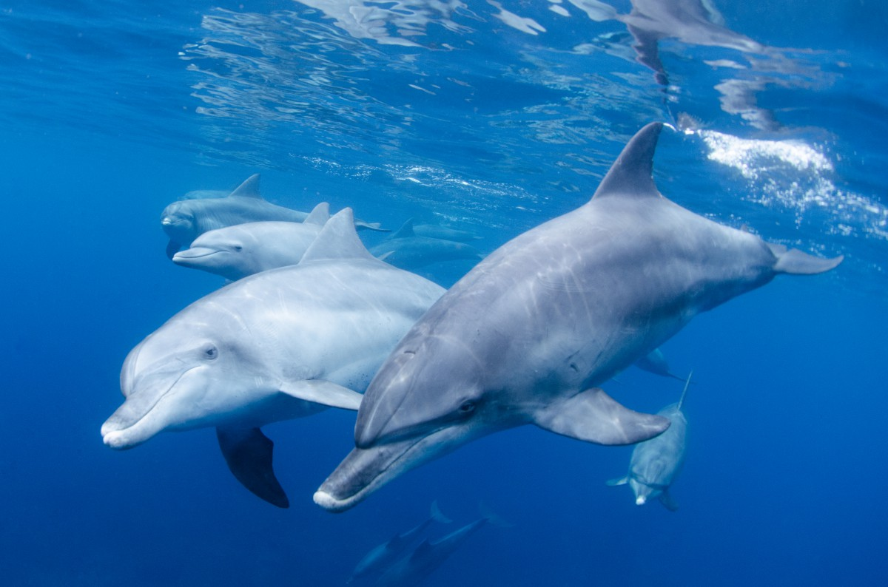
Записаться можно в туристической ассоциации или в дайвинг-центрах острова, лучше за неделю. В 2019 году участие стоило 14 000 иен с человека.
Еда
Аситаба и камамэси в старом рёкане
Главный местный продукт острова, по словам одного из фермеров, родился из суровости здешней природы. Это аситаба, зонтичное растение, которое растёт на острове само по себе. Название значит «завтрашний лист»: говорят, срежешь лист сегодня, а завтра на его месте уже вырос новый. У аситабы своеобразный аромат, и без неё не обходятся островные блюда, например тэмпура и отварная зелень с соусом. Когда в Японии начался спрос на здоровую еду, аситабу стали выращивать на свежую зелень и делать из неё порошок, лапшу и сладости.
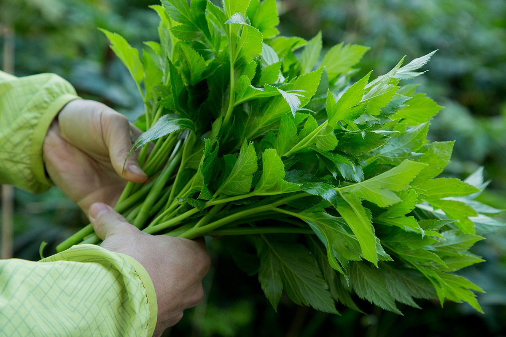
Удобно жить на острове в гостинице, где готовят из местных продуктов. Рёкан «Яманобэ» открылся в 1950 году. В комнате с очагом ирори здесь подают «госямэн-рёри», блюда, чьё название напоминает о помиловании ссыльных, и около 20 видов островного камамэси, риса, сваренного в котелке. В него кладут золотоглазого окуня кинмэдай, островных моллюсков и крупных морских улиток. Камамэси с кинмэдаем в 2019 году стоил 1600 иен. Хозяин рёкана три года придумывал собственную копчёную ставриду, которую назвал «Аситаба-кунсэй».
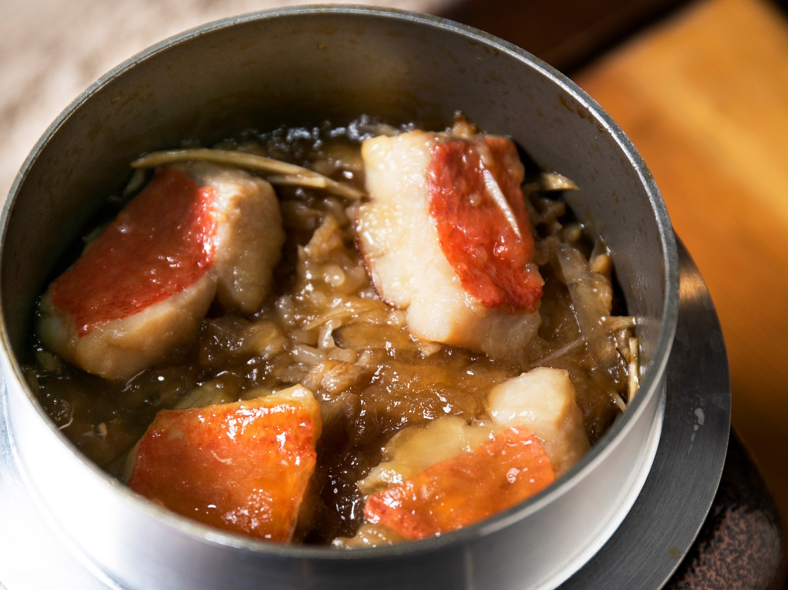
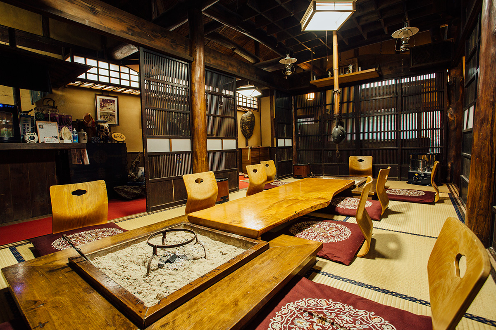
«Природа здесь страшная и прекрасная одновременно. Поэтому на Миякэдзиме жизнь делает человека богаче душой»
хозяева рёкана «Яманобэ»
Рёкан «Яманобэ»
- Адрес
- столичный округ Токио, деревня Миякэ, Ако, 1544
- Телефон
- +81 4994-5-0317
- Цены / Вход
- от 9900 иен с человека за ночь с завтраком и ужином, при двух гостях в номере, в обычный сезон
На другой стороне острова в 2019 году много говорили о новом кафе GIZMO. Его сэндвичи почти целиком собирают из продуктов Миякэдзимы, и выглядят они так, что их хочется фотографировать.
Онсэн
«Фурусато-но ю»: закат в солёной воде
Закончить день можно в муниципальном онсэне «Фурусато-но ю», в воде, которую дал вулкан. Вода здесь хлоридно-натриевая, сильно солёная на вкус и с коричневым оттенком. Из открытой купальни видно, как солнце опускается в море. С декабря по март открытая купальня закрыта.
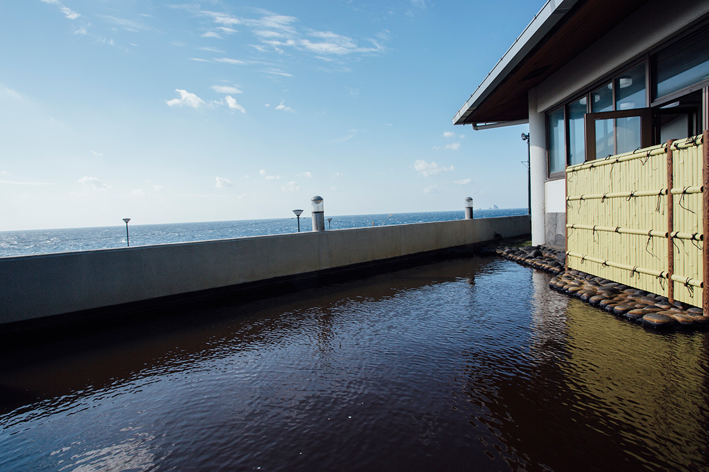
«Фурусато-но ю»
- Адрес
- столичный округ Токио, деревня Миякэ, Ако, 644
- Телефон
- +81 4994-5-0426
- Часы работы
- 11:00–21:00 (апрель–сентябрь), 11:00–20:00 (октябрь–март)
- Выходные
- среда (если это праздник, то следующий день)
Фото: Масато Окияма, Хидэо Курихара (Aflo), Хироюки Дзёраку, Хироюки Кудо, Юри Ямасаки, Юити Ёкота, Хироюки Ёда.